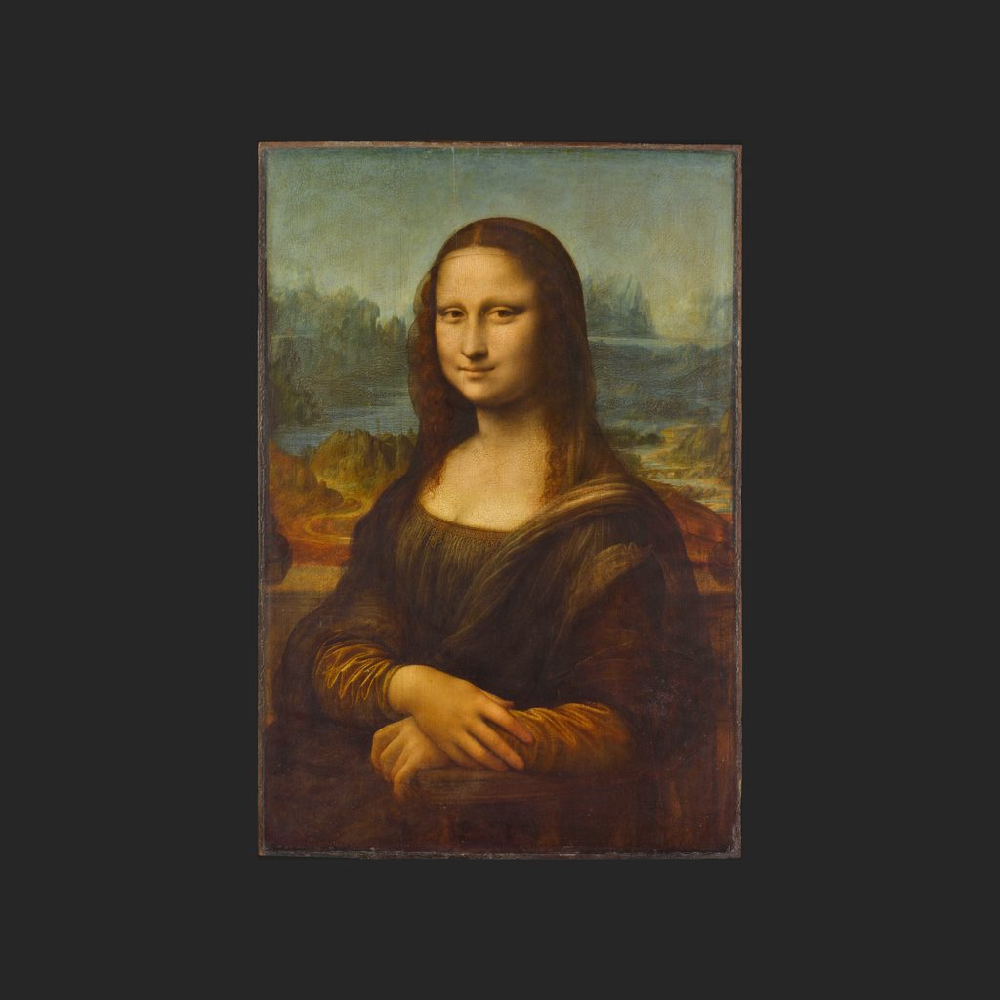

蒙娜麗莎
達文西 · 1503—1519年
La Joconde
解說節錄
她在笑，嘴角的笑意很輕。可她為什麼笑，畫家始終沒有告訴我們。她的身體，不是正對著你坐著，而是微微側著，雙手自然地疊放在椅子扶手上。羅浮宮的解讀是：這個轉身加上微笑，就像她正轉過來迎接看畫的人。
這就是《蒙娜麗莎》，作者李奧納多．達文西。達文西不只是畫家，他也做雕塑、從事工程、研究科學，是文藝復興時代的全才。畫中的女子叫麗莎·蓋拉爾迪尼，是佛羅倫斯一位絲綢商人弗朗切斯科·德爾·焦孔多的妻子。「蒙娜麗莎」的意思大致是「麗莎夫人」；法國人叫她「喬孔達」，來自她丈夫的姓。
— 國語講稿 · Artvery
完整解說約 4 分鐘，在 Artvery App 裡收聽。國語、粵語、內地普通話三種語音，館內對準作品即可辨識播放。
即將上架 App Store
App 即將上架，敬請期待。上架後免費下載，每座博物館單獨購買，一次購買永久使用。
作品資訊
- 作者
- 達文西
- 年代
- 1503—1519年
- 尺寸
- 79.4 × 53.4 公分
- 位置
- 羅浮宮 · 德農館（Denon）
- 館藏編號
- INV 779; MR 316